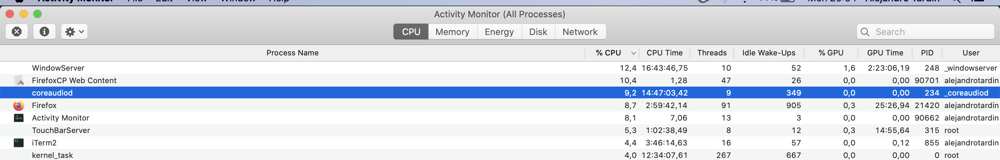

Steps:
Open this site on Firefox on MacOS.
Open the activity monitor.
Check that the coreaudio process is consuming around 10% of CPU. 
😢
If you close the tab the process goes away after a few seconds.